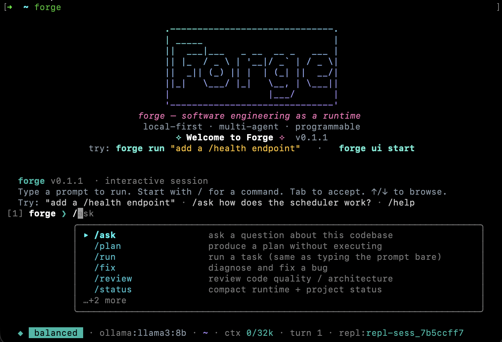
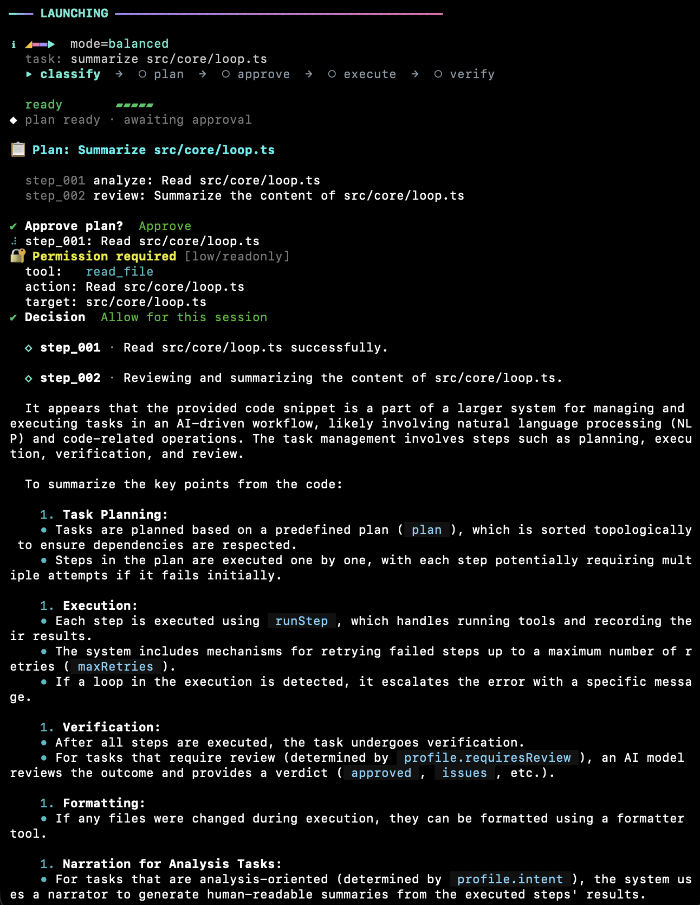
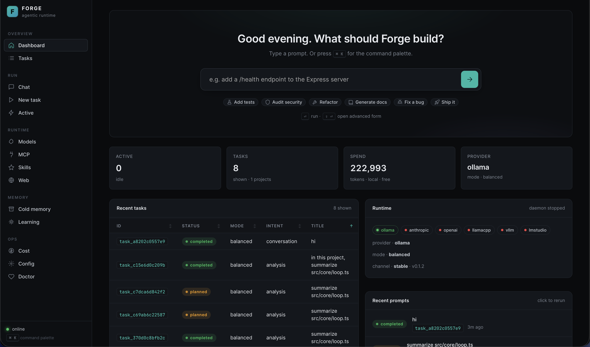

Forge ships its own scheduler, sandbox, permission system, state machine, iterative tool-use executor, four-tier memory, and plugin ecosystem. You pick the model. You approve the actions. Everything is inspectable, replayable, and yours.
A TypeScript CLI runtime for local-first agentic software engineering. Every piece below lives in src/. Node 20+. Ships via npm and a multi-arch Docker image.
Classify → plan → approve → execute with iterative tool-use → validate → review → complete → learn. Failures escalate to diagnose — never a silent loop.
Tasks JSON, sessions JSONL, events JSONL. Conversations are JSONL with O_APPEND concurrency. Prompt hashes are deterministic.
Every tool call classified by risk × side-effect × sensitivity. Paths realpath-confined. Shell risk-rated; critical hard-blocked. Credentials in OS keychain.
Auto-detects Ollama, LM Studio, vLLM, llama.cpp on default ports. 41 model families classified for role routing; auto-substitutes when your configured model isn't installed.
Every feature below is in src/. Grep from any claim to a file.



Auto-detects Ollama, LM Studio, vLLM, llama.cpp. Hosted Anthropic / OpenAI / Azure / Groq / LocalAI / Together / Fireworks are opt-in.
Model sees every tool result (stdout / stderr / exit) and adapts within a step. Mode-capped turn budgets.
Post-step typecheck / lint failures re-enter the loop as tool results — fixed before the next step runs.
Plans have step dependencies, risk annotations, explicit tool calls. Auto-fixer repairs common issues; cycles rejected.
Reviewer gates completion. On terminal failure, debugger agent diagnoses root cause before marking failed.
Hot (session) · warm (SQLite recent) · cold (lazy project index) · learning (patterns with decaying confidence).
Risk × side-effect × sensitivity classified at every call. --skip-permissions only waives routine prompts.
Every path resolved to realpath, confined to project root. Always-forbidden targets (SSH keys, AWS creds) hard-blocked.
Commands rated before execution. rm -rf /, sudo, fork bombs, curl-to-shell hard-blocked.
macOS Security, libsecret, Windows DPAPI. AES-GCM encrypted fallback if unavailable.
REPL + UI + subagents edit the same conversation via POSIX O_APPEND + mkdir lockfile fallback.
Untrusted content (web / MCP) fenced as data, never instructions. Redactor scrubs secrets before logs.
Model Context Protocol: stdio + HTTP-stream. OAuth 2.0 + PKCE or API-key auth. Tokens in keychain.
Markdown + YAML frontmatter in ~/.forge/skills/. Per-project overrides.
HTTP + WebSocket UI. Vanilla JS, < 100 KB, zero CDN. Delta watchers ref-counted across tabs.
Per-provider rate limit, circuit breaker, prompt cache, USD cost ledger. 1.5 s provider probes.
Manifest signed with Ed25519. SHA-256 per artefact. npm publishes with provenance.
Single Dockerfile serves CLI + UI. Non-root, HEALTHCHECK, OCI labels, ~355 MB.
Screen captures of each Forge surface — the interactive REPL, the one-shot CLI, and the web dashboard — all driving the same runtime.
Multi-turn prompts with slash-command autocomplete, status line, digit shortcuts for prompts, streamed markdown rendering, and live file-change tracking.
forge run "…" launches a full classify → plan → approve → execute → verify pipeline in the terminal with a progress rail and completion block.
Live WebSocket stream of plan approval, permission prompts, model deltas, and task results. Historical tasks replay from disk; follow-ups thread the conversation.
The same src/core/orchestrator.ts runtime drives all three surfaces. Any task you run in one surface is a real row in the SQLite index — pickable from another surface, visible in forge sessions, cancellable from the dashboard.
Deltas stream token-by-token from the provider (emitDelta → event bus → WebSocket / REPL progress rail). Markdown reflows in place so headings, fences, and lists form up live instead of dumping at the end.
REPL
forgeOne-shot
forge run "summarize src/core/loop.ts"Dashboard
forge ui start # http://127.0.0.1:7823Source: src/core/loop.ts. Retry cap is 3. The debugger agent runs root-cause diagnosis before marking a task failed.
---
config:
look: handDrawn
theme: base
themeVariables:
fontSize: 16px
---
flowchart LR
IN(("USER
prompt")) --> CLS["CLASSIFY
intent · risk · scope"]
CLS --> PL["PLAN
DAG · steps · deps"]
PL --> AP{"Approve?"}
AP -- edit --> PL
AP -- no --> CNCL(["cancelled"])
AP -- yes --> EX["EXECUTE
iterative tool-use"]
EX --> VG{"Validate
(tsc · lint)"}
VG -- fails + budget --> EX
VG -- fails + out --> DX["DIAGNOSE"]
DX --> FL(["failed"])
VG -- pass --> RV["REVIEW
reviewer agent"]
RV -- bounce --> EX
RV -- pass --> DONE(["completed"])
DONE --> LRN["LEARN
patterns updated"]
classDef term fill:#0a1a14,stroke:#10b981,color:#d1fae5,stroke-width:2px
classDef fail fill:#1a0909,stroke:#f87171,color:#fee2e2,stroke-width:2px
classDef step fill:#0f1726,stroke:#38bdf8,color:#e0f2fe,stroke-width:1.8px
classDef gate fill:#1a1634,stroke:#a78bfa,color:#ede9fe,stroke-width:1.8px
classDef io fill:#0c1a24,stroke:#22d3ee,color:#cffafe,stroke-width:2px
class IN io
class CNCL,FL fail
class DONE term
class CLS,PL,EX,RV,DX,LRN step
class AP,VG gate
Enforced by LEGAL_TRANSITIONS in src/persistence/tasks.ts. Illegal moves throw state_invalid. Terminal states only re-enter via forge resume, which resets them to draft.
---
config:
theme: base
themeVariables:
fontSize: 16px
---
stateDiagram-v2
direction LR
[*] --> draft
draft --> planned : planner output
draft --> cancelled : user
planned --> approved : user approves
planned --> blocked : missing deps
planned --> cancelled
approved --> scheduled
approved --> cancelled
scheduled --> running
scheduled --> blocked
scheduled --> cancelled
running --> verifying
running --> failed
running --> blocked
running --> cancelled
verifying --> completed
verifying --> failed
verifying --> running : reviewer bounces
completed --> draft : forge resume
failed --> draft : forge resume
blocked --> draft : forge resume
cancelled --> draft : forge resume
blocked --> cancelled
completed --> [*]
failed --> [*]
cancelled --> [*]
Model sees every tool result — stdout, stderr, exit, error — and can adapt. Source: src/agents/executor.ts.
---
config:
theme: base
themeVariables:
fontSize: 15px
actorFontSize: 14px
messageFontSize: 13px
---
sequenceDiagram
autonumber
participant L as loop.ts
participant E as executor
participant M as model
participant T as tool
participant V as validator
L->>E: runStep(step)
loop up to maxExecutorTurns
E->>M: prompt + JSON schema
M-->>E: {actions, done?}
alt done
E-->>L: completed
else actions
E->>T: execute
T-->>E: stdout / stderr / exit
E->>E: digest + append
end
end
opt files changed
loop up to maxValidationRetries
E->>V: typecheck / lint
alt pass
E-->>L: completed
else fail
E->>M: VALIDATION_FAILED
M-->>E: corrective actions
E->>T: execute
end
end
end
Planner reads top-K learning patterns before every plan.
---
config:
theme: base
themeVariables:
fontSize: 15px
---
flowchart TB
Q["query
retrieve.ts"] --> H["🔥 HOT
in-session facts
cleared on task end"]
Q --> W["☀️ WARM
recent tasks · SQLite
ages out"]
Q --> C["❄️ COLD
project files · grep · AST
lazy-indexed"]
Q --> L["🧠 LEARNING
patterns + confidence
decays if unused"]
classDef t fill:#0f1726,stroke:#38bdf8,color:#e0f2fe,stroke-width:2px
classDef src fill:#0c1a24,stroke:#22d3ee,color:#cffafe,stroke-width:2px
class Q src
class H,W,C,L t
6 providers, auto-detected on default ports. 41 model families classified for role routing.
---
config:
theme: base
themeVariables:
fontSize: 15px
---
flowchart LR
R["router
resolveModel"] --> AD["adapter
resolveLocalModel"]
AD --> L1["🟢 ollama
:11434"]
AD --> L2["🔵 lmstudio
:1234"]
AD --> L3["🟠 vllm
:8000"]
AD --> L4["🟡 llama.cpp
:8080"]
R --> H1["⬛ anthropic"]
R --> H2["⬛ openai-compat"]
R --> RL["rate limit"]
R --> CB["circuit breaker"]
R --> PC["prompt cache"]
R --> CT["USD ledger"]
classDef route fill:#0f1726,stroke:#38bdf8,color:#e0f2fe,stroke-width:2px
classDef local fill:#0a1a14,stroke:#10b981,color:#d1fae5,stroke-width:2px
classDef hosted fill:#1a1634,stroke:#a78bfa,color:#ede9fe,stroke-width:2px
classDef util fill:#16121a,stroke:#f472b6,color:#fce7f3,stroke-width:1.8px
class R,AD route
class L1,L2,L3,L4 local
class H1,H2 hosted
class RL,CB,PC,CT util
| Role | Preferred families |
|---|---|
| architect · reviewer · debugger | Llama 3.x / 4.x, Mixtral, Command-R+, DeepSeek V3 / R1, Mistral-Large |
| planner | Qwen 2.5 / 3, Llama 3.x, DeepSeek V3, Gemma 3, Mistral-Nemo, Command-R, Phi 4 |
| executor (code) | DeepSeek-Coder, Qwen 2.5-Coder, CodeLlama, Codestral, StarCoder, Granite-Code |
| fast | Phi 3 / 4, Gemma 2, TinyLlama, SmolLM, MiniCPM |
The agentic loop is multi-turn tool use with strict JSON output. Small local models can drive it, but not every kind of work is realistic at every size. Pick by the work you intend to do, and set a hosted fallback for when you hit the ceiling — the router degrades gracefully via its circuit breaker.
| Work | Local floor we trust | Example pulls |
|---|---|---|
| Chat / concept Q&A | 3B instruct | phi3:mini · gemma3:2b · qwen2.5:3b |
| Summarize / explain code | 7B instruct | qwen2.5:7b · llama3.1:8b |
| Single-file edits / small features | 7B+ code specialist | deepseek-coder:6.7b · qwen2.5-coder:7b |
| Multi-file refactors / new features | 14B+ code specialist | qwen2.5-coder:14b · deepseek-coder:33b |
| Architecture-level changes | hosted only, realistically | Claude Opus/Sonnet · GPT-4-class |
Below the tier floor, models fail in recognisable ways. Forge catches each so a small model fails loudly instead of corrupting state.
| Failure mode | Runtime guard |
|---|---|
Picks run_command to write file contents | Executor prompt spells out step.type → tool mapping and forbids run_command for file writes. |
Escalates to ask_user on any tool error, stalling the step | ask_user rejects empty / too-short questions as non-retryable; model has to switch tools. |
| Splits "create empty file → edit to fill" | edit_file with oldText="" on an empty/missing file writes the full body. |
write_file ENOENT because parent dir doesn't exist | createDirs defaults to true (mkdir-p). |
| Cold-load timeout interpreted as model failure | Headers-timeout floor 300 s; proactive warm() with /api/ps preflight. |
| Reviewer rejects analysis tasks for "no file changes" | Classifier sets requiresReview=false for intent=analysis; narrator pass writes the real answer. |
| Two concurrent edits race on the same file | Per-process path-mutex + atomic temp+rename. |
---
config:
theme: base
themeVariables:
fontSize: 15px
---
flowchart TB
REQ["tool call"] --> C["classify
risk · sideEffect · sensitivity"]
C --> S{"path in sandbox?
cmd allow-listed?"}
S -->|"no"| X["⛔ HARD-BLOCK
sandbox_violation"]
S -->|"yes"| G{"risk × sideEffect"}
G -->|"low / read"| A["✅ auto-allow"]
G -->|"med / write"| K["❓ ask user"]
G -->|"high / exec"| ST["🔒 ask · strict"]
K --> F{"session flags?"}
F -->|"allow-* flag"| A
F -->|"non-interactive"| D["⛔ deny silently"]
F -->|"interactive"| P["user prompt"]
P -->|"allow"| A
P -->|"deny"| D
A --> E["execute"]
E --> TR["trust calibration
auto-allow after N confirms"]
classDef ok fill:#0a1a14,stroke:#10b981,color:#d1fae5,stroke-width:2px
classDef bad fill:#1a0909,stroke:#f87171,color:#fee2e2,stroke-width:2px
classDef gate fill:#1a1634,stroke:#a78bfa,color:#ede9fe,stroke-width:2px
classDef step fill:#0f1726,stroke:#38bdf8,color:#e0f2fe,stroke-width:1.8px
class A,E,TR ok
class X,D bad
class S,G,F gate
class REQ,C,K,ST,P step
Each mode is a runtime cap, not a hint. Read from src/core/mode-policy.ts.
| Mode | Executor turns | Validation retries | Mutations | Max auto-risk |
|---|---|---|---|---|
fast | 2 | 0 | yes | low |
balanced | 4 | 1 | yes | medium |
heavy | 8 | 2 | yes | high |
plan | 0 → 1 | 0 | no | low |
execute | 4 | 1 | yes | medium |
audit | 3 | 0 | no | low |
debug | 6 | 2 | yes | medium |
architect | 3 | 1 | yes | medium |
offline-safe | 3 | 1 | yes | medium |
# Core forge # REPL (default) forge init # create ~/.forge + ./.forge forge run "<prompt>" # full agentic loop forge plan "<prompt>" # plan-only forge execute "<prompt>" # auto-approve + execute forge resume [taskId] # resume any prior task forge status # runtime state forge doctor # health + role→model mapping # State inspection forge task list|search # task history forge session list|replay # session JSONL forge memory {hot|warm|cold} # memory layers # Models & config forge model list forge config get|set|path forge cost # USD ledger # Integrations forge mcp list|add|remove forge skills list|new forge agents list forge web {search|fetch} # Ops forge ui start # dashboard :7823 forge daemon start|stop|status forge container up|down # compose wrapper forge bundle pack|unpack # offline bundles forge update # self-update
---
config:
theme: base
themeVariables:
fontSize: 14px
---
flowchart TB
subgraph GLOBAL["global · ~/.forge"]
G1[config.json]
G2[instructions.md]
G3[skills/]
G4[agents/]
G5[mcp/]
G6[index.db]
G7["projects · tasks · sessions · events"]
end
subgraph PROJECT["per-project · ./.forge"]
P1[config.json]
P2[instructions.md]
P3[skills/]
P4[agents/]
P5[mcp/]
end
--- name: conventional-commit description: Enforce Conventional Commits. triggers: [commit, git] --- When writing commit messages, use Conventional Commits: feat(scope): … fix(scope): … refactor(scope): …
forge mcp list forge mcp add linear --transport stdio --command "mcp-linear-server" forge mcp add postgres --transport http --url https://mcp.example/v1 --auth oauth2-pkce forge mcp status
Forge runs on any platform Node 20 runs on, or anywhere Docker runs. There is no host-side Python, Rust, or Go requirement. better-sqlite3 is the only native module and ships prebuilts for every supported triple — no toolchain needed on npm install.
Node.js ≥ 20 (22 tested).
OS: macOS · Linux · Windows (native or WSL).
Architectures: x64 · arm64.
Docker ≥ 25 (only if you prefer the container path).
Disk: ~150 MB node_modules; state under ~/.forge grows with session history (override with FORGE_HOME).
RAM: ~100 MB for Forge itself. Your local model uses its own RAM/VRAM on top.
Cold start: forge doctor ~170 ms.
Local: Ollama · LM Studio · vLLM · llama.cpp — auto-detected on standard ports.
Hosted: ANTHROPIC_API_KEY · OPENAI_API_KEY (+ OPENAI_BASE_URL for any OpenAI-compatible server).
forge doctor probes all of them and tells you which are reachable.
13 runtime packages, zero optional dependencies. Listed below so you can audit them before npm install.
@modelcontextprotocol/sdk # MCP bridge (stdio / http_stream / websocket) better-sqlite3 # local index DB · FTS5 cold memory · native, prebuilt chalk # ANSI color cli-table3 # tables in `forge doctor`, `task list` commander # CLI argv parsing dotenv # .env loading ora # progress spinner prompts # non-TTY fallback for the numbered-select helper semver # update-check version comparison undici # HTTP client · Ollama / Anthropic / OpenAI streams ws # UI dashboard WebSocket yaml # skill-file frontmatter zod # runtime validation of plans & tool args
ripgrep — fast path for the grep tool; falls back to a Node glob walker.
git — enables git_diff / git_status tools and project-root detection.
$EDITOR — used when you pick "Edit" on a plan approval; falls back to vi.
docker run --rm -it \
-v forge-home:/data \
-v "$PWD:/workspace" \
ghcr.io/hoangsonw/forge-agentic-coding-cli:latest
docker compose \
-f docker/docker-compose.yml \
up -d
# podman-compose works
---
config:
theme: base
themeVariables:
fontSize: 14px
---
flowchart LR
subgraph BUILD["Stage 1 · builder"]
direction TB
B1[node:20-slim] --> B2[npm ci
tsc + copy-assets]
B2 --> B3[npm prune --omit=dev]
end
subgraph RUN["Stage 2 · runtime · ~355 MB"]
direction TB
R1[node:20-slim] --> R2[apt: git · ripgrep · tini]
R2 --> R3[non-root uid 10001]
R3 --> R4[pruned node_modules + dist]
R4 --> R5[HEALTHCHECK · forge doctor]
R5 --> R6[OCI labels]
end
BUILD -.dist + prod deps.-> RUN
classDef s fill:#0f1726,stroke:#38bdf8,color:#e0f2fe,stroke-width:1.8px
class B1,B2,B3,R1,R2,R3,R4,R5,R6 s
---
config:
theme: base
themeVariables:
fontSize: 14px
---
flowchart LR
PR(["PR / push"]) --> FMT["🎨 format"]
PR --> LINT["🧹 lint"]
PR --> TYPE["🧠 typecheck"]
PR --> TEST["🧪 test matrix
Ubuntu · macOS
Node 20 · 22"]
TEST --> COV["📈 coverage"]
TYPE --> BUILD["🏗️ build"]
BUILD --> DOCKER["🐳 docker-build"]
PR --> AUDIT["🔐 audit"]
FMT --> S["📊 pipeline
status"]
LINT --> S
TYPE --> S
TEST --> S
BUILD --> S
DOCKER --> S
AUDIT --> S
COV --> S
classDef job fill:#0f1726,stroke:#38bdf8,color:#e0f2fe,stroke-width:2px
classDef tg fill:#0c1a24,stroke:#22d3ee,color:#cffafe,stroke-width:2px
classDef sum fill:#1a1634,stroke:#a78bfa,color:#ede9fe,stroke-width:2px
class PR tg
class FMT,LINT,TYPE,TEST,COV,BUILD,DOCKER,AUDIT job
class S sum
v* tag
---
config:
theme: base
themeVariables:
fontSize: 14px
---
flowchart LR
T(["git tag v*"]) --> G["🧪 pre-release
gate"]
G --> A["📦 artifacts
5 targets"]
G --> D["🐳 docker
multi-arch → GHCR"]
A --> M["📝 manifest
ed25519-signed"]
M --> N["📤 npm publish
--provenance"]
G --> R["📊 release
status"]
A --> R
D --> R
M --> R
N --> R
classDef tg fill:#0c1a24,stroke:#22d3ee,color:#cffafe,stroke-width:2px
classDef job fill:#0f1726,stroke:#38bdf8,color:#e0f2fe,stroke-width:2px
classDef ship fill:#1a1409,stroke:#fb923c,color:#ffedd5,stroke-width:2px
classDef sum fill:#1a1634,stroke:#a78bfa,color:#ede9fe,stroke-width:2px
class T tg
class G job
class A,D,M,N ship
class R sum
All measured locally — reproducers in the table at the bottom. No synthetic benchmarks, no comparisons against straw-man tools.
| Target | Measured | Reproducer |
|---|---|---|
forge doctor cold-start | 173 ms | time node bin/forge.js doctor --no-banner |
forge --help cold-start | 238 ms | time node bin/forge.js --help |
| full test suite | ~3.3 s | npx vitest run |
| UI app.js uncompressed | 89 KB | wc -c src/ui/public/app.js |
| container image | ~355 MB | docker images ghcr.io/hoangsonw/forge-agentic-coding-cli |
| CDN fetches at runtime | 0 | inspect app.js · no external URLs |
| provider probe timeout | 1.5 s | src/models/openai.ts#isAvailable |
Context files so agents don't re-learn the repo every turn.
OpenAI AGENTS.md convention. Flat Markdown cheat-sheet: identity, commands, layout, rules, testing patterns, CI reference, performance + security posture.
Repo identity, hot paths, conventions, pre-completion checklist, style prefs. Kept short and grep-able so every line is load-bearing.
Cold-start 173 ms. UI shell 89 KB · zero CDN. Providers probe with 1.5 s timeouts.